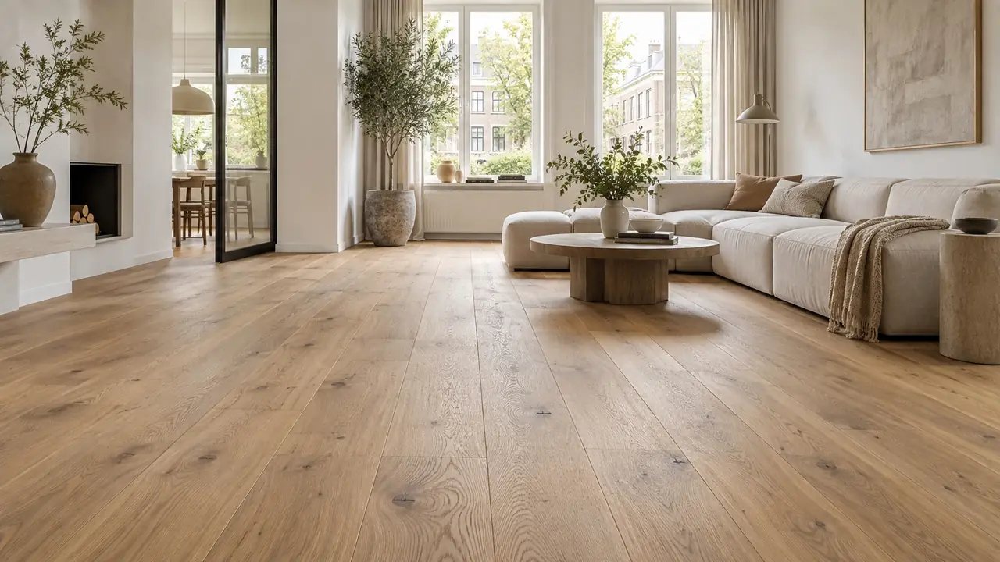
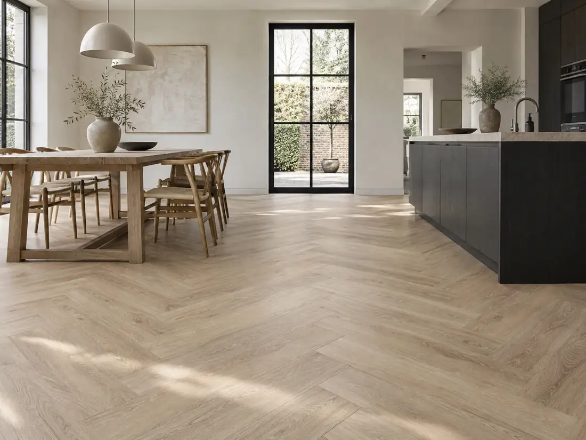
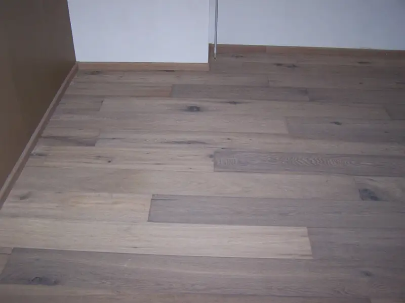
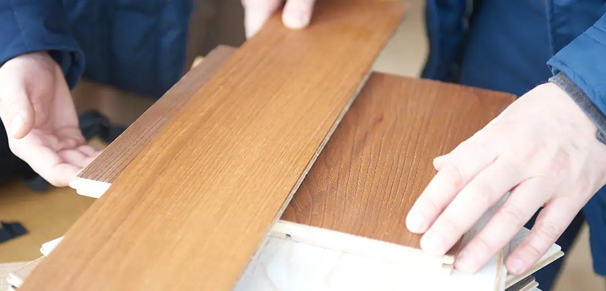
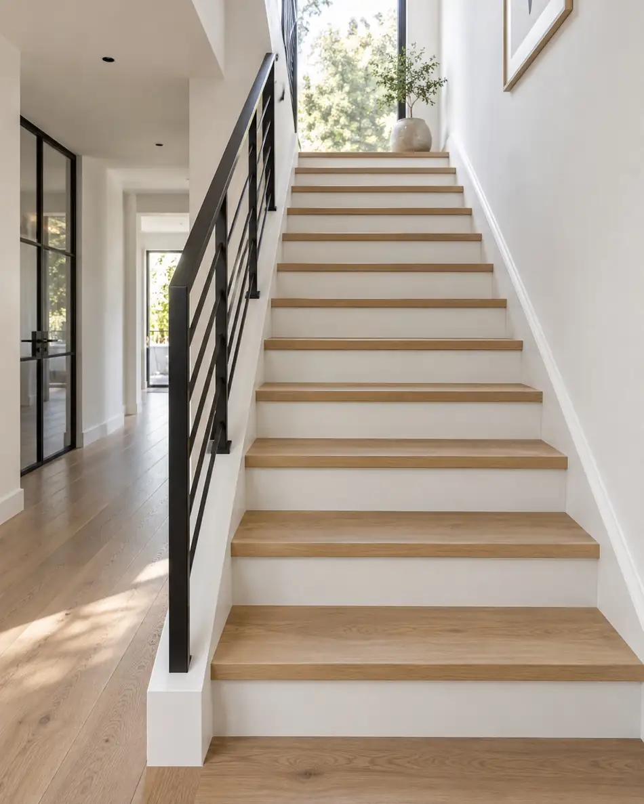

Parket
Echt hout. Eindeloos karakter.
Traditioneel tapisparket, lamelparket, multiplank en massieve vloeren — zorgvuldig gekozen, gelegd en afgewerkt.

Parket · PVC · Renovatie · Trappen
Persoonlijk vloeradvies, ambachtelijke plaatsing en een feilloze afwerking. Thuis in echt hout én modern PVC.
Onze specialismen
Van authentiek parket tot onderhoudsarm PVC. Alex begeleidt u persoonlijk van materiaalkeuze en ondergrond tot legpatroon en afwerking.
Traditioneel tapisparket, lamelparket, multiplank en massieve vloeren — zorgvuldig gekozen, gelegd en afgewerkt.

PVC in plank-, tegel- of patroonvorm. Inclusief beoordeling van de ondergrond, professioneel egaliseren en vakkundig verlijmen.

Stofarm schuren, aanhelen, repareren, borstelen en opnieuw afwerken met olie of lak.

Persoonlijk proces
De juiste keuze ontstaat door te kijken naar uw woning, leefstijl, ondergrond, vloerverwarming en smaak. Daarom komt Alex met stalen bij u thuis en ontvangt u een heldere offerte zonder verplichtingen.
Kwaliteit door vaardigheid.
Een kleine, persoonlijke onderneming met grote aandacht voor elk detail.
Hout & afwerking
Traditioneel parket, lamelparket en multiplank kunnen in uiteenlopende patronen worden gelegd. Voor woningen met vloerverwarming adviseren we stabiele, dun opgebouwde vloeren en geschikte houtsoorten.
Hardwax-olie
Inkleur-olie
White & silver wash
Ultra matte lak
2-componentenlak
Roken, logen & borstelen
Traprenovatie
Een oude, versleten of beschadigde trap kan vakkundig worden bekleed met hout, laminaat of PVC. Iedere trede, zijwand en elk stootbord wordt afzonderlijk opgemeten en precies passend gemaakt.
Hout, laminaat of PVC
Iedere trede op maat
Keuze uit meerdere houtsoorten
Afwerking met olie of 2K-lak

Over Alex
Alex Kamsma Design Parket is gespecialiseerd in parket, PVC inclusief egaliseren, laminaat, stofarme renovatie en ambachtelijke traprenovatie.
Van het eerste advies tot de laatste plint heeft u persoonlijk contact. De ondergrond, legwijze, afwerking en het onderhoud worden als één geheel bekeken. Zo krijgt u niet alleen een mooie vloer, maar een oplossing die past bij uw woning en jarenlang goed blijft.
“Gegarandeerde kwaliteit met een kritisch oog voor detail.”
Plank, tegel, visgraat of ander patroon. Een stille, onderhoudsarme en sterke keuze, ook bij vloerverwarming.
Losse delen vastzetten, beschadigde delen vervangen, stofarm schuren, polijsten of borstelen en opnieuw verzegelen.
Afwerklat, blokplint, hoge MDF-plint, fineer of aluminium-look — gecombineerd met een passende, eventueel 10 dB geluidwerende ondervloer.
Vrijblijvend advies
Vraag kosteloos advies en een offerte aan huis. Een afspraak in de avonduren is mogelijk.
06 20 74 59 59info@alexkamsmaparket.nlBel Alex direct